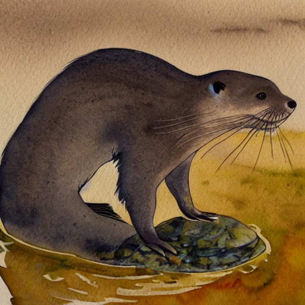
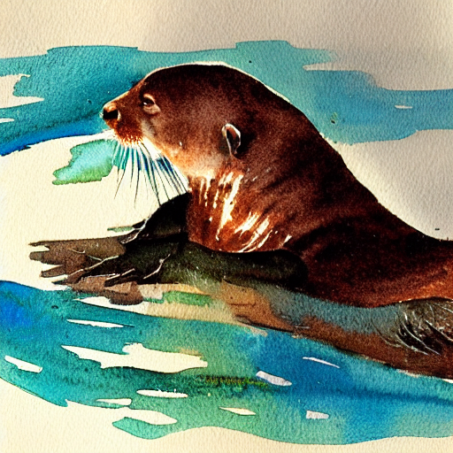

# Load the autoencoder model which will be used to decode the latents into image space.
vae = AutoencoderKL.from_pretrained("CompVis/stable-diffusion-v1-4", subfolder="vae")
# The CLIP Model for generating the embeddings
model = CLIPModel.from_pretrained("openai/clip-vit-large-patch14")
processor = CLIPProcessor.from_pretrained("openai/clip-vit-large-patch14")
# The UNet model for generating the latents.
unet = UNet2DConditionModel.from_pretrained("CompVis/stable-diffusion-v1-4", subfolder="unet")
# The noise scheduler
scheduler = LMSDiscreteScheduler(beta_start=0.00085, beta_end=0.012, beta_schedule="scaled_linear", num_train_timesteps=1000)
tokenizer = processor.tokenizer
# To the GPU we go!
vae = vae.to(torch_device)
text_encoder = model.text_model.to(torch_device)
image_encoder = model.vision_model.to(torch_device)
unet = unet.to(torch_device)Exploring Stable Diffusion
This code is based on Stable Diffusion Deep Dive notebook by @johnowhitaker
Loading the models
Some settings
height = 512 # default height of Stable Diffusion
width = 512 # default width of Stable Diffusion
num_inference_steps = 30 # Number of denoising steps
guidance_scale = 7.5 # Scale for classifier-free guidance
generator = torch.manual_seed(32) # Seed generator to create the inital latent noise
batch_size = 1
scheduler.set_timesteps(num_inference_steps)Utility functions
def generate_seed_latent(generator=None):
# Prep latents
latents = torch.randn(
(batch_size, unet.in_channels, height // 8, width // 8), generator=generator,
)
latents = latents.to(torch_device)
latents = latents * scheduler.init_noise_sigma
return latents
def pil_to_latent(input_im):
# Single image -> single latent in a batch (so size 1, 4, 64, 64)
with torch.no_grad():
latent = vae.encode(tfms.ToTensor()(input_im).unsqueeze(0).to(torch_device)*2-1) # Note scaling
return 0.18215 * latent.latent_dist.sample()
def latents_to_pil(latents):
# bath of latents -> list of images
latents = (1 / 0.18215) * latents
with torch.no_grad():
image = vae.decode(latents).sample
image = (image / 2 + 0.5).clamp(0, 1)
image = image.detach().cpu().permute(0, 2, 3, 1).numpy()
images = (image * 255).round().astype("uint8")
pil_images = [Image.fromarray(image) for image in images]
return pil_images
# denoising loop
def sdloop(latents, hidden):
with autocast("cuda"):
for i, t in tqdm(enumerate(scheduler.timesteps)):
# expand the latents if we are doing classifier-free guidance to avoid doing two forward passes.
latent_model_input = torch.cat([latents] * 2)
sigma = scheduler.sigmas[i]
# Scale the latents (preconditioning):
latent_model_input = scheduler.scale_model_input(latent_model_input, t)
# predict the noise residual
with torch.no_grad():
noise_pred = unet(latent_model_input, t, encoder_hidden_states=hidden).sample
# perform guidance
noise_pred_uncond, noise_pred_text = noise_pred.chunk(2)
noise_pred = noise_pred_uncond + guidance_scale * (noise_pred_text - noise_pred_uncond)
# compute the previous noisy sample x_t -> x_t-1
# latents = scheduler.step(noise_pred, i, latents)["prev_sample"] # Diffusers 0.3 and below
latents = scheduler.step(noise_pred, t, latents).prev_sample
# scale and decode the image latents with vae
# latents = 1 / 0.18215 * latents
return latentsExploring CLIP embeddings
First, let’s simplify the unconditioning embedding code. From Stable Diffusion Deep Dive notebook, we have:
# Prep text
prompt = ["A watercolor painting of an otter"]
text_input = tokenizer(prompt, padding="max_length", max_length=tokenizer.model_max_length, truncation=True, return_tensors="pt")
with torch.no_grad():
text_embeddings = text_encoder(text_input.input_ids.to(torch_device))[0]
max_length = text_input.input_ids.shape[-1]; max_length
uncond_input = tokenizer(
[""] * batch_size, padding="max_length", max_length=max_length, return_tensors="pt"
)
with torch.no_grad():
uncond_embeddings = text_encoder(uncond_input.input_ids.to(torch_device))[0]
text_embeddings = torch.cat([uncond_embeddings, text_embeddings]).half()
text_embeddings.shapetorch.Size([2, 77, 768])latents = sdloop(generate_seed_latent(), text_embeddings)
latents_to_pil(latents.to(torch.float32))[0]
but we could simplify this with:
prompts = ["", "A watercolor painting of an otter"]
inputs = processor(text=prompts, padding="max_length", max_length=tokenizer.model_max_length, truncation=True, return_tensors="pt")
with torch.no_grad():
t_e = text_encoder(input_ids=inputs.input_ids.to(torch_device))[0].half()
t_e.shapetorch.Size([2, 77, 768])latents = sdloop(generate_seed_latent(), t_e)
otter = latents_to_pil(latents.to(torch.float32))[0];otter
Notice also that:
text_encoder(input_ids=inputs.input_ids.to(torch_device))BaseModelOutputWithPooling(last_hidden_state=tensor([[[-0.3884, 0.0229, -0.0522, ..., -0.4899, -0.3066, 0.0675],
[-0.3711, -1.4497, -0.3401, ..., 0.9489, 0.1867, -1.1034],
[-0.5107, -1.4629, -0.2926, ..., 1.0419, 0.0701, -1.0284],
...,
[ 0.5006, -0.9552, -0.6610, ..., 1.6013, -1.0622, -0.2191],
[ 0.4988, -0.9451, -0.6656, ..., 1.6467, -1.0858, -0.2088],
[ 0.4923, -0.8124, -0.4912, ..., 1.6108, -1.0174, -0.2484]],
[[-0.3884, 0.0229, -0.0522, ..., -0.4899, -0.3066, 0.0675],
[ 0.0290, -1.3258, 0.3085, ..., -0.5257, 0.9768, 0.6652],
[-0.2279, 0.0401, 1.4532, ..., -0.8664, -0.0721, 1.8452],
...,
[ 0.4580, 0.4419, 1.0750, ..., -1.6370, -1.5812, -0.2933],
[ 0.4597, 0.4174, 1.0474, ..., -1.6088, -1.5758, -0.2907],
[ 0.4342, 0.4253, 1.1790, ..., -1.6748, -1.5393, -0.3574]]],
device='cuda:0', grad_fn=<NativeLayerNormBackward0>), pooler_output=tensor([[-0.3711, -1.4497, -0.3401, ..., 0.9489, 0.1867, -1.1034],
[ 0.2317, 0.7205, 0.9957, ..., -2.3833, -0.6834, 0.2252]],
device='cuda:0', grad_fn=<IndexBackward0>), hidden_states=None, attentions=None)i.e. the encoder returns not only 2 vectors representing the 2 prompts in the input:
text_encoder(input_ids=inputs.input_ids.to(torch_device))[1].shapetorch.Size([2, 768])but also the last_hidden_state, i.e the layer that will produce these vectors. This layer is what is added to the unet and conditions the image generation to produce something simillar to the embedding.
text_encoder(input_ids=inputs.input_ids.to(torch_device))[0].shapetorch.Size([2, 77, 768])This weights will be frozen in the unet.
Image embeddings
Another interesting point of the processor is that it can generate image embeddings as well. Let us look at it.
images = [otter]
inputs = processor(text=prompts, images=images, padding="max_length", max_length=tokenizer.model_max_length, truncation=True, return_tensors="pt")
with torch.no_grad():
t_e = text_encoder(input_ids=inputs.input_ids.to(torch_device))[0].half()
i_e = image_encoder(pixel_values=inputs.pixel_values.to(torch_device))[0].half()
t_e.shape, i_e.shape(torch.Size([2, 77, 768]), torch.Size([1, 257, 1024]))For some reason, vision_model.embeddings and text_model.embeddings are not the directly comparable
text_encoder.embeddings, image_encoder.embeddings(CLIPTextEmbeddings(
(token_embedding): Embedding(49408, 768)
(position_embedding): Embedding(77, 768)
),
CLIPVisionEmbeddings(
(patch_embedding): Conv2d(3, 1024, kernel_size=(14, 14), stride=(14, 14), bias=False)
(position_embedding): Embedding(257, 1024)
))Comparing Image and Text embeddings
We need to project these embeddings to the same space to make them comparable
image_projection = model.visual_projection.to(torch_device)
text_projection = model.text_projection.to(torch_device)
prompts = ["", "A watercolor painting of an otter", "A photograph of an astronaut riding a horse"]
inputs = processor(text=prompts,images = images, padding="max_length", max_length=tokenizer.model_max_length, truncation=True, return_tensors="pt")
with autocast('cuda'):
with torch.no_grad():
vision_outputs = image_encoder(pixel_values=inputs.pixel_values.to(torch_device))
text_outputs = text_encoder(input_ids=inputs.input_ids.to(torch_device))
img_embeds = image_projection(vision_outputs[1])
txt_embeds = text_projection(text_outputs[1])
i_proj = img_embeds / img_embeds.norm(p=2, dim=-1, keepdim=True)
t_proj = txt_embeds / txt_embeds.norm(p=2, dim=-1, keepdim=True)
i_proj.shape, t_proj.shape(torch.Size([1, 768]), torch.Size([3, 768]))# cosine similarity as logits
logits_per_text = torch.matmul(t_proj, i_proj.t())
logits_per_image = logits_per_text.t()probs = logits_per_image.softmax(dim=1);probstensor([[0.3257, 0.3914, 0.2829]], device='cuda:0')The image is more similar to the second prompt: “A watercolor painting of an otter”, as expected!
Still, I was looking for a wider difference among the prompts probabilities.
WIP bellow
Conditioning with Image Embeddings
Unfortunately, the unet only works with the text_encoder hidden states dimensions:
t_e.shapetorch.Size([2, 77, 768])latents = generate_seed_latent()
latent_model_input = torch.cat([latents] * 2)
with torch.no_grad():
with autocast('cuda'):
npred = unet(latent_model_input, scheduler.timesteps[15], encoder_hidden_states=t_e).sample
npred.shapetorch.Size([2, 4, 64, 64])latent_model_input = torch.cat([latents] * 2)
with torch.no_grad():
with autocast('cuda'):
npred = unet(latent_model_input, scheduler.timesteps[15], encoder_hidden_states=i_e).sample
npred.shapeRuntimeError: mat1 and mat2 shapes cannot be multiplied (257x1024 and 768x320)